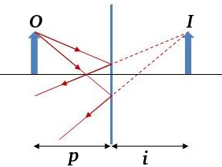
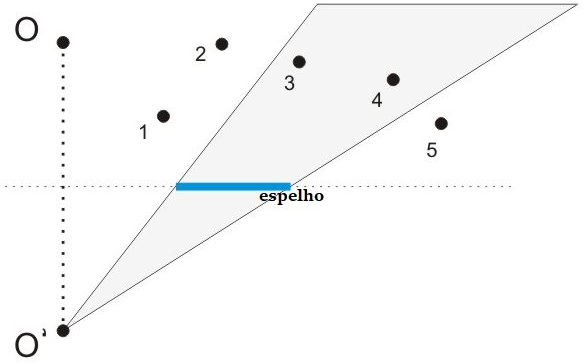
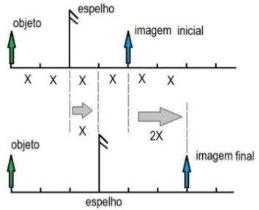
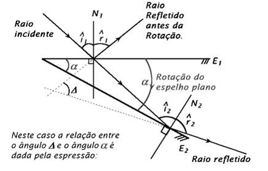
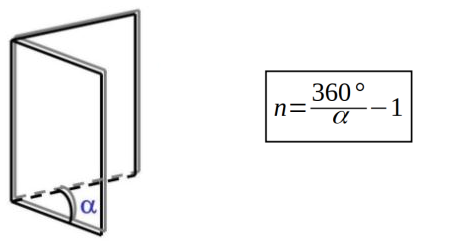

Aula7-56: Espelhos planos
Espelhos planos são superfícies planas, sem curvatura, polidas e capazes de promover a reflexão regular da luz.
Formação de imagens em espelhos planos
|
A distância entre o objeto e o espelho é sempre igual à distância entre a imagem gerada e o espelho (p = i). Sabendo disso, para obtermos a imagem, desenhamos o objeto, ponto a ponto, à referida distância do espelho. Em seguida, ligamos um ponto qualquer do objeto ao ponto de observação e, então, obtemos a imagem. Observe que, na verdade, os raios de luz são desviados ao longo da trajetória, mas é importante destacar que o nosso cérebro não é capaz de detectar isso; por isso, temos a ilusão de que a imagem está atrás do espelho. Obs.: a imagem formada nesse caso é denominada revertida ou enantiomorfa, pois, no processo de formação, ela é horizontalmente invertida |
 |
➔ Classificação da imagem: (a imagem formada em espelhos planos sempre possuirá as características destacadas em negrito).
⚛ QUANTO AO ENCONTRO DOS RAIOS:
◦ Real: se a imagem é formada a partir da prolongação dos raios refletidos;
◦ Virtual: sempre que a imagem é formada a partir do encontro direto dos raios refletidos;
◦ Imprópria: sempre que os raios não se encontram. Nesse caso, não há formação de imagem.
⚛ QUANTO AO SENTIDO:
◦ Direita: a imagem projeta-se preservando o seu sentido vertical;
◦ Invertida: a imagem projeta-se verticalmente invertida.
⚛ QUANTO AO TAMANHO DA IMAGEM:
◦ Maior: a imagem originada é maior do que o objeto;
◦ Menor: a imagem originada é menor do que o objeto;
◦ Igual: a imagem possui o mesmo tamanho do objeto.
Campo visual
Campo visual é o nome dado à área que, através de um espelho, é visível a um observador localizado em um ponto qualquer.
|
Para encontrarmos o campo visual de um espelho para um determinado observador (O), primeiro prolongamos, se preciso for, o plano do espelho. Em seguida, representamos o observador (O’ [simétrico do observador]) a uma mesma distância atrás do plano do espelho. Para concluir, basta desenharmos duas retas que partem de O’ e cortam as extremidades do espelho, formando as margens do campo visual. Observe a figura ao lado: ela nos informa que o observador é capaz de ver, por meio do espelho, apenas os pontos 3 e 4. |
 |
Translação dum espelho plano
Um corpo em movimento translacional é um corpo que se move sem que as direções de suas partes se alterem. Quando transladamos um espelho, afastando-o ou aproximando-o do objeto, a imagem formada afasta-se ou aproxima-se do observador. Analisaremos agora essa relação.
|
A imagem ao lado ilustra uma situação em que o espelho é afastado uma distância x; considerando o que aprendemos anteriormente, podemos inferir que a imagem será transladada o dobro dessa distância (2x). E isso vale para qualquer uma dessas situações: se o espelho é afastado ou aproximado em uma distância qualquer, então a imagem será afastada ou aproximada, respectivamente, o dobro dessa distância: |
 |
Segue desta relação entre as distâncias, as seguintes relações de velocidade e aceleração:
⚛ VELOCIDADE DE TRANSLAÇÃO E VELOCIDADE DA IMAGEM:
A velocidade de translação é dada pela fórmula: ; a velocidade de translação da imagem após a translação do objeto é dada por:
então... , isolando o dt nas equações das velocidades e igualando-as, teremos:
⚛ ACELERAÇÃO DE TRANSLAÇÃO E ACELERAÇÃO DA IMAGEM
A aceleração da imagem pode ser obtida por meio de e a aceleração de translação por
Se isolarmos a velocidade da imagem nas equações e, em seguida, igualá-las, obteremos:
Rotação dum espelho plano
Um corpo em movimento rotacional é um corpo que gira em torno de um eixo fixo. Quando um raio luminoso incide sobre um espelho plano, o espelho o reflete. Se submetermos esse espelho a uma rotação, o raio luminoso sofrerá uma alteração em sua direção. A alteração em sua direção (variação de ângulo entre o raio refletido antes e depois da rotação) é representada por:

Uma análise geométrica da figura acima nos permite encontrar a relação entre o ângulo de inclinação (ângulo rotacionado) e a variação de ângulo do raio refletido antes e depois dessa rotação. A relação obtida é expressa na fórmula abaixo:
Associação de espelhos planos
Se pusermos um objeto defronte a um espelho plano, este gerará uma imagem com as características já mencionadas; no entanto, se colocarmos outro espelho plano ao redor daquele, faremos com que a imagem gerada por um desses espelhos seja objeto para o outro, que gerará uma nova imagem, a qual poderá, novamente, ser interpretada como objeto, e assim sucessivamente. O número de imagens geradas por essa associação de espelhos planos pode ser obtido pela seguinte expressão:

Em que:
n: número de imagens geradas;
α: ângulo formado entre os espelhos